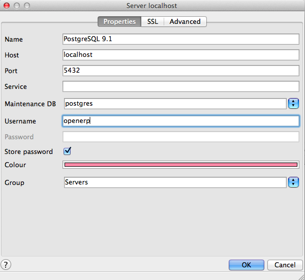

PostgreSQL does not install any graphical user interface for the Database administration, for a graphical user interface of postgresql, use the following command on your Ubuntu Desktop client:
openerp@openerp-desktop:/$ sudo apt-get install pgadmin3
Configure PostgreSQL for the PgAdmin 3 to connect with databases. Now check the list of tables created in PostgreSQL using following command:
postgres@openerp-desktop:/$ psql -l
You can find the table template1, run the following command to use this table:
postgres@openerp-desktop:/$ psql template1
To apply access rights to the role openerp for the database which will be created from OpenERP Client, use the following command:
template1=# alter role openerp with password 'postgres';
ALTER ROLE
To access your database using pgAdmin III, you must configure the database connection as shown in the following figure:
PgAdmin3 Connection Configuration